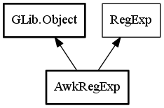

AwkRegExp
Object Hierarchy:

Description:
public class AwkRegExp :
Object,
RegExp
Static class for generation AWK specific regular expressions
Short Description
Used to generate AWK specific regular expressions,
escape AWK specific special characters
Content:
Static methods:
Creation methods:
Inherited Members:
All known members inherited from class GLib.Object
All known members inherited from interface RegExp